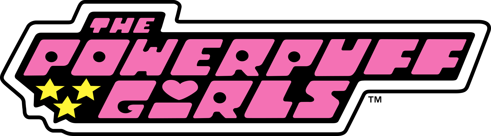

Python loading…

sugar, spice, and everything nice
what do you meme?
Are you coding yet?
← back
what do you meme?
Loading face/hand detection…
—
← back
Are you coding yet?
def greet(name): print("hello, " + name) greet("world")
Run
Note: an infinite loop will freeze the tab; reload if that happens.
syntax errors triggered: 0